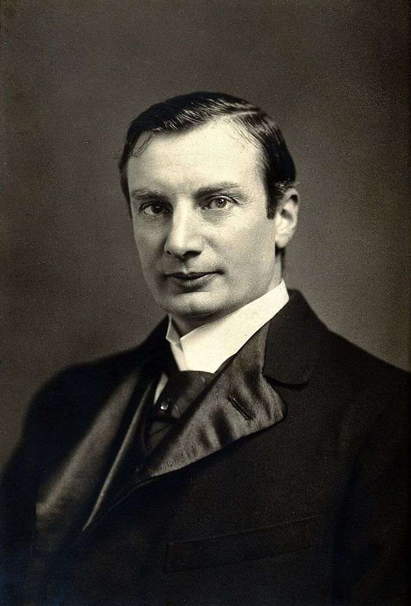
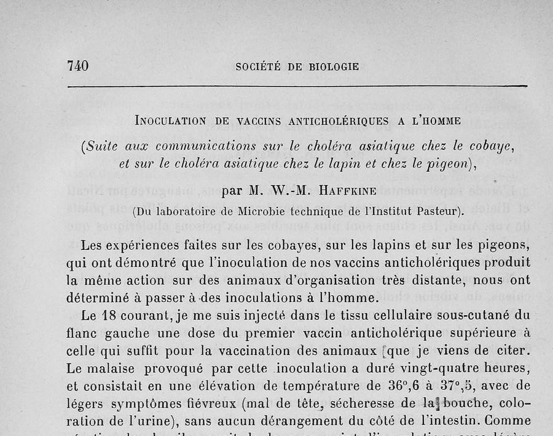
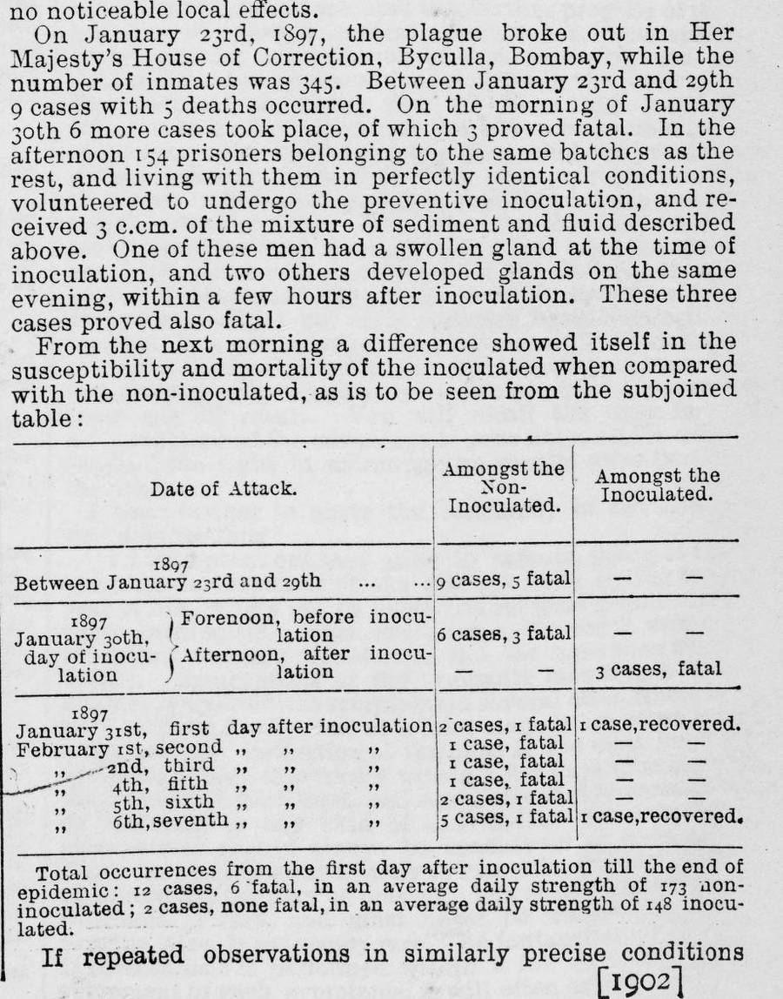

Из Одессы — в Париж, Калькутту и Бомбей
Читается подряд. Нажми на удар — откроется подробный разбор с источниками.
Владимир Хавкин родился 15 марта 1860 года в Одессе и учился в Новороссийском университете у Ильи Мечникова.Узнать подробнееСвернуть

Владимир Аронович Хавкин. Фотопортрет из собрания Wellcome Collection, Викисклад, CC BY 4.0. Детство он провёл в Бердянске, где отец учительствовал в еврейской школе. В университете Хавкин ходил в кружок народовольцев, после 1 марта 1881 года сидел в тюрьме и был отчислен. Доучиться ему позволили через три года: в 1884-м он сдал экзамены и получил степень кандидата естественных наук.
Источники: журнал «Родина», Н. Амонбеков, «Создателя первых вакцин против чумы и холеры на Родине не ценили» (2020); «Коммерсантъ», С. Петухов, «Революционер в микробиологии» (2017); РИО, М. Малунова, «Владимир Аронович Хавкин. Самый неизвестный учёный России» (2021).
Под полицейским надзором достойной работы в России не нашлось: он служил музейным препаратором за гроши, и в 1889 году Хавкин стал помощником библиотекаря в Институте Пастера в Париже.Узнать подробнееСвернуть
Сначала, в 1888 году, Мечников позвал его в Лозанну, на место приват-доцента, а на следующий год Хавкин перебрался за учителем в Париж. Должность помощника библиотекаря была скромной, но давала главное — место рядом с лабораториями, где учились делать прививки.
Источники: РИО, «Владимир Аронович Хавкин. Самый неизвестный учёный России»; «Коммерсантъ», «Революционер в микробиологии».
К лету 1892 года он получил две вакцины от холеры — ослабленный микроб и усиленный — и проверил их на морских свинках, кроликах и голубях.Узнать подробнееСвернуть
Свои опыты Хавкин доложил Парижскому биологическому обществу 9 и 16 июля 1892 года (морские свинки; кролики и голуби). Холерный вибрион он держал в заданной силе: ослабленный — для первой прививки, усиленный проходами через морских свинок — для второй, через шесть дней. Так Дженнер держал оспенную вакцину, передавая её от телёнка к телёнку, и Хавкин потом подчёркивал это родство: вакцина — это микроб, которому задали силу и не дают её потерять.
Источники: W.-M. Haffkine, «Le choléra asiatique chez le cobaye» и «Le choléra asiatique chez le lapin et chez le pigeon», Comptes rendus de la Société de biologie, 1892; W. M. Haffkine, «A Lecture on Vaccination against Cholera», 18 декабря 1895 (Indian Medical Gazette, март 1896).
18 июля 1892 года Хавкин ввёл себе под кожу левого бока первую вакцину в дозе больше той, что защищала животных, а 24 июля — вторую.Узнать подробнееСвернуть

Стр. 740 «Отчётов Парижского биологического общества» за 1892 год, заседание 30 июля: «Прививка противохолерных вакцин человеку». Скан из Internet Archive, общественное достояние. Находка дняСвою заметку Хавкин начинает с себя: «18-го числа сего месяца я ввёл себе в подкожную клетчатку левого бока дозу первой противохолерной вакцины, превышающую ту, что достаточна для прививки названных животных». Недомогание длилось сутки, температура поднялась с 36,6 до 37,5 градуса, кишечник не пострадал. После второй вакцины 24 июля жар дошёл до 38,6 и прошёл за двадцать восемь часов. Заметку прочли на заседании 30 июля 1892 года.
Источник: W.-M. Haffkine, «Inoculation de vaccins anticholériques à l’homme», Comptes rendus des séances de la Société de biologie, 9e série, t. 4, séance du 30 juillet 1892, p. 740–741.
Следом вызвались трое из России: врач Явейн из Петербурга, врач Тамамшев из Тифлиса и агроном Вильбушевич из Москвы.Узнать подробнееСвернуть
Явейну, который был «на 17 килограммов тяжелее» самого Хавкина, 22 июля досталась та же доза, что и ему, а Тамамшеву и Вильбушевичу 25 июля — четыре пятых дозы. У всех были жар, боль и припухлость на месте укола, и всё прошло за несколько дней. Вывод заметки: прививка обеих вакцин «не представляет ни малейшей опасности для здоровья», и Хавкин надеялся, что через шесть дней после неё человек будет защищён от холеры.
Источник: W.-M. Haffkine, «Inoculation de vaccins anticholériques à l’homme», Comptes rendus de la Société de biologie, 30 juillet 1892, p. 740–741.
Испанец Хайме Ферран тут же напомнил, что прививал от холеры тысячи людей ещё в 1885 году, но сам Хавкин видел разницу в том, что именно вводят.Узнать подробнееСвернуть
В том же томе «Отчётов» за 1892 год напечатана записка Феррана из Барселоны: он просит Хавкина не забыть его «права на приоритет» и пишет, что «тысячи людей были привиты в 1885 году». В лекции 1895 года Хавкин отвечал: Ферран вводил вибрионы, взятые у больных холерой, как когда-то прививали саму оспу, а в Индии он вводит вакцину, приготовленную по Дженнеру и Пастеру. Опыты Феррана остановило испанское правительство, а комиссии Испании, Англии, Франции, России и Бельгии их не одобрили.
Источники: J. Ferran, «À propos de la communication de M. Haffkine, sur le choléra asiatique», Comptes rendus de la Société de biologie, 1892; W. M. Haffkine, «A Lecture on Vaccination against Cholera» (1895).
Россия испытывать прививку не разрешила, а Британия разрешила — в Индии. С апреля 1893 по июль 1895 года Хавкин привил 42 179 человек.Узнать подробнееСвернуть
По словам самого Хавкина, правительственная комиссия в России отказала ему, сославшись в том числе на неудачу Феррана; журнал «Родина» добавляет, что мешала и «революционная» репутация доктора. За двадцать девять месяцев в Индии Хавкин сделал больше 70 тысяч уколов — британским офицерам и солдатам, индийским сипаям, рабочим чайных плантаций, жителям Калькутты — «без единого случая вреда». Прививали только тех, кого удавалось уговорить: «никакого давления со стороны властей».
Источники: W. M. Haffkine, «A Lecture on Vaccination against Cholera» (1895); «Родина», «Создателя первых вакцин против чумы и холеры на Родине не ценили».
В Калькутте в каждом доме прививали только часть семьи, и с 11-го по 459-й день после прививки среди непривитых умерли 34 человека из 263, среди привитых — один из 137.Узнать подробнееСвернуть
Хавкин нарочно прививал только часть полка, тюрьмы, плантации или семьи: остальные жили в тех же условиях — с ними и сравнивали. Холера пришла в 36 калькуттских домов. После первых десяти дней она была в 26 из них, и там привитые болели в 19 раз реже и умирали в 17 раз реже, а единственным умершим из привитых был ребёнок, которого не привели на второй укол. Роберт Кох, открывший холерный вибрион, сказал Хавкину, что считает защиту доказанной.
Источник: W. M. Haffkine, «A Lecture on Vaccination against Cholera» (1895), раздел «Indian Experiences».
В октябре 1896 года Хавкин приехал в Бомбей, где началась чума, и сделал для неё новую вакцину — из убитых нагреванием чумных палочек.Узнать подробнееСвернуть
Холерный способ здесь не годился. Чумную палочку Хавкин растил месяц в бульоне, на поверхности которого плавали капли топлёного масла гхи: микробы росли под каплями «сталактитами», их стряхивали на дно, и масло давало новый урожай. Потом палочки убивали часом нагрева до 70 градусов. По рассказам биографов, первым прививку от чумы Хавкин и на этот раз проверил на себе. Прививки начались 10 января 1897 года.
Источники: W. M. Haffkine, «Remarks on the Plague Prophylactic Fluid», British Medical Journal, 12 июня 1897; Summarised Report on the Bombay Plague Research Laboratory for the years 1896–1902; РИО, «Владимир Аронович Хавкин. Самый неизвестный учёный России».
23 января 1897 года чума вспыхнула в бомбейской тюрьме Байкулла, и 30 января 154 заключённых-добровольца получили прививку, а остальные — нет.Узнать подробнееСвернуть

British Medical Journal, 12 июня 1897, стр. 1461: таблица Хавкина по тюрьме Байкулла. Скан оттиска из библиотеки Wellcome, Internet Archive, общественное достояние. В тюрьме было 345 человек. С 23 по 29 января заболели девять, пятеро умерли; утром 30 января — ещё шесть случаев. Днём привились 154 человека из тех же камер. Трое из них умерли: у одного бубон был уже при уколе, у двоих вздулся в тот же вечер. А дальше, с первого дня после прививки и до конца вспышки, среди непривитых (в среднем 173 человека) было 12 случаев и 6 смертей, среди привитых (148) — 2 случая и ни одной смерти.
Источник: W. M. Haffkine, «Remarks on the Plague Prophylactic Fluid», British Medical Journal, 1897, vol. 1, p. 1461–1462.
Медицинский журнал Индии в марте 1897 года назвал Хавкина первооткрывателем защиты от двух самых страшных болезней.Узнать подробнееСвернуть
«Открыватель предохранительных средств против двух самых страшных из всех болезней займёт место среди величайших благодетелей человечества», — писала Indian Medical Gazette. С 10 января 1897 по 31 мая 1901 года бомбейская лаборатория Хавкина отправила 2 380 288 доз противочумной вакцины — по Индии и в Африку, Австралию, Европу и Америку, а за следующий год ещё 486 753. С 1925 года бывшая лаборатория носит его имя: Институт Хавкина в Мумбаи.
Источники: «M. Haffkine», Indian Medical Gazette, март 1897; Summarised Report on the Bombay Plague Research Laboratory for the years 1896–1902; «Родина», «Создателя первых вакцин против чумы и холеры на Родине не ценили».
«В России это самый неизвестный человек, в Англии же его давно прозвали великим филантропом», — писал о Хавкине Чехов в 1899 году.Узнать подробнееСвернуть
Чехов писал это Суворину: прививки от чумы уже есть, и «мы ими, кстати сказать, обязаны русскому доктору Хавкину». Двумя годами раньше он жалел, что «Хавкин в России не популярен». Сам Хавкин прожил в Индии больше пятнадцати лет, стал британским подданным, в 1926 году приезжал в Одессу, а умер в 1930 году в Лозанне. «Работа в Индии заняла лучшие годы моей жизни», — писал он незадолго до смерти.
Источники: «Родина», «Создателя первых вакцин против чумы и холеры на Родине не ценили» (письма А. П. Чехова А. С. Суворину, 1897 и 1899); РИО, «Владимир Аронович Хавкин. Самый неизвестный учёный России».